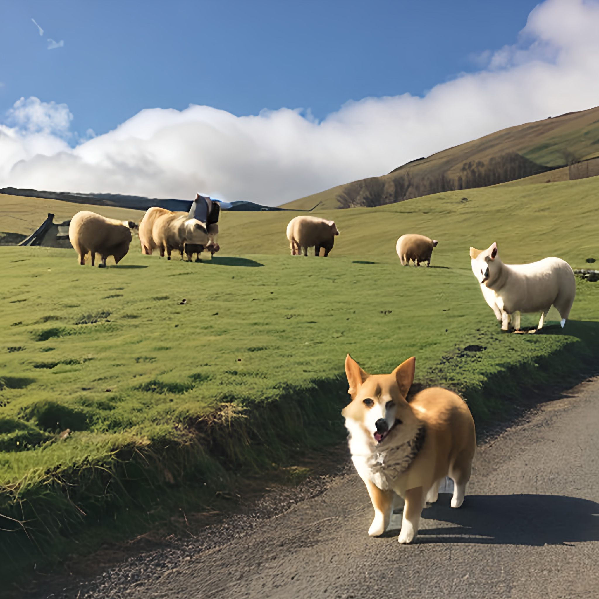

웰시코딩목차3
웰시코기의 단미의 진실

머나먼 옛날 켈트족들이 키웠는데, 원산지는 이름에서도 알 수 있듯이 영국 웨일스(Welsh) 지방이다.
이름을 분석하면 welsh(웨일스)의 corgi(다리가 짧고 코가 뾰족한 작은 개)이다. 펨브로크(Pembroke)와 카디건(Cardigan) 두 종이 있는데,
현재 한국에 있는 웰시 코기의 대부분은 펨브로크이다. 원래는 단일종으로 간주했지만 1930년부터 세분하여 상기한 두 종으로 분류했으며,
카디건이 펨브로크보다 체구가 조금 크고 귀가 넓으며 모색도 훨씬 다양하다.
펨브로크 종이 꼬리가 짧다고 알려졌지만 실제로는 대부분 어릴 적에 단미 수술을 받아서 꼬리가 잘린 것이다.
본래 이유는 웰시 코기는 목양견의 역할을 하는데 가축이나 말 등에게 꼬리를 밟혀 크게 부상을 입을 수 있기 때문에 단미를 한 것이다.
물론 단미 안 한 코기들도 볼 수 있다. 실제 자연적으로 단미한 펨브로크 웰시 코기는 없는 것과 마찬가지다.
그런데 이 단미가 고착화 되어 단순히 미용 목적 내지는 관습적으로 내려온 것으로 생각해 단미를 진행한 경우가 많다.
출처 : 나무위키